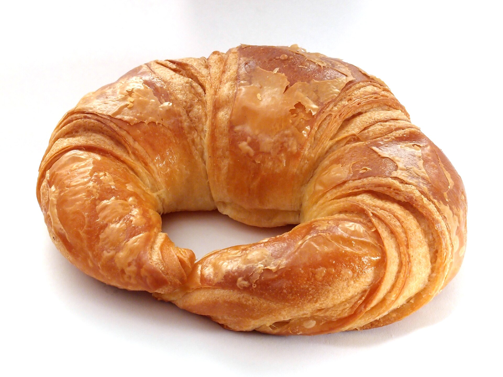
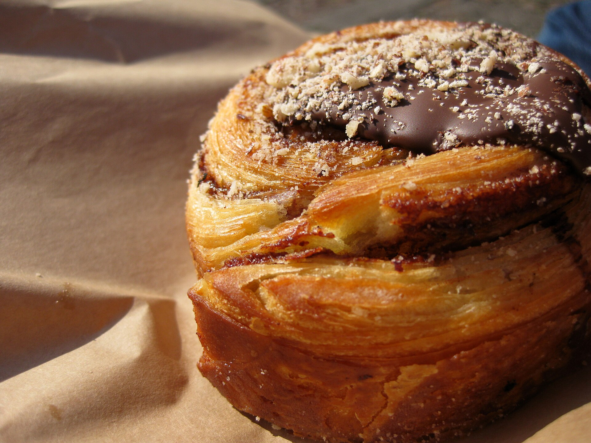
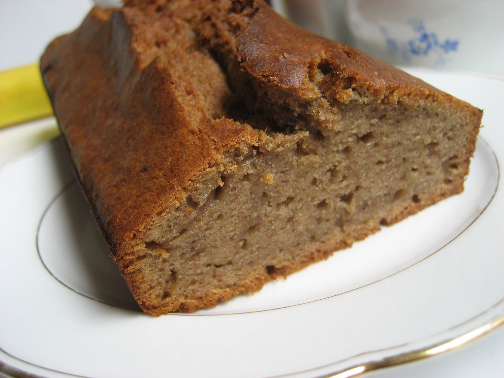
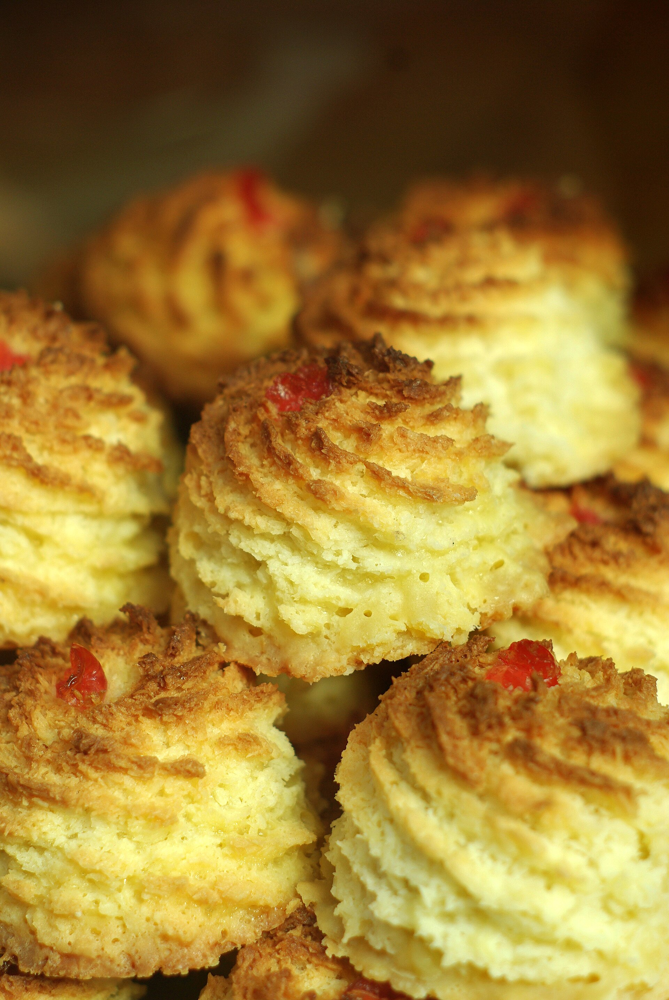
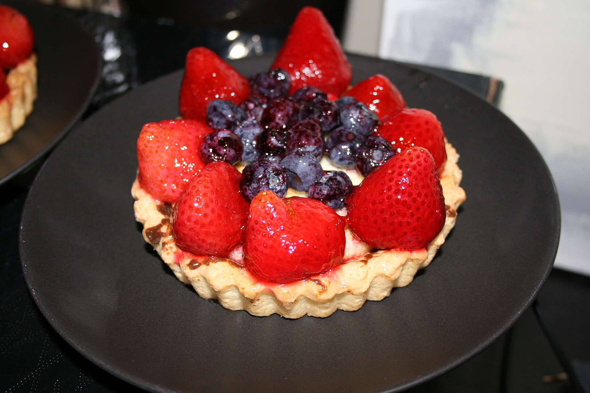
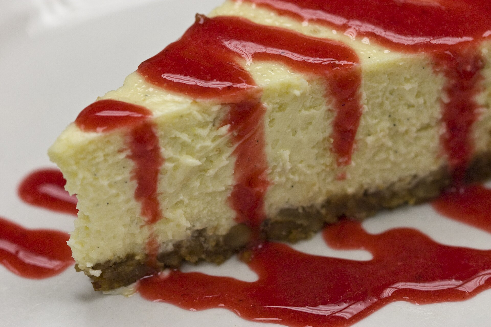

К выпечке
Круассан классический
72 часа холодного расстойки, французское масло 82,5% — хруст громкий, крошка нежная.
глютенмолоко
190 ₽
Выпечка · своя пекарская секция
Круассаны выходят из печи к открытию, тарты — ближе к полудню. Всё, что остаётся к вечеру, разбирают на «комплимент с собой» — мы не делаем запасы «на завтра».
Цены и состав — демонстрационные, для портфолио-проекта.
К утру · с 8:00

72 часа холодного расстойки, французское масло 82,5% — хруст громкий, крошка нежная.
190 ₽

Бриошь с двумя полосками тёмного шоколада 60% и морской солью сверху.
220 ₽

Только переспелые бананы, грецкий орех и тростниковый сахар — как у бабушки, но точнее.
240 ₽
В течение дня · с 12:00

Меняем по сезону: сегодня — макаруны ручной работы, к пятницам — сдоба с корицей.
240 ₽

Песочная база, ванильный крем патисьер и столько ягод, сколько влезет по красоте.
290 ₽

Запечённый нью-йорк на песочной базе: плотный, с сырной кислинкой, подаётся холодным.
320 ₽
Есть аллергия? Скажите бариста — пекарь расскажет состав по каждой позиции. Безглютеновая позиция бывает по субботам; какао и чай варим без ореховых сиропов.
Ритм пекарни
Бронируйте столик к 9 утра — к вашему приходу партия только что выйдет из печи.